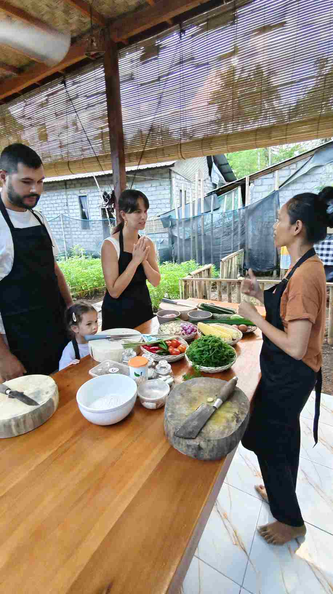
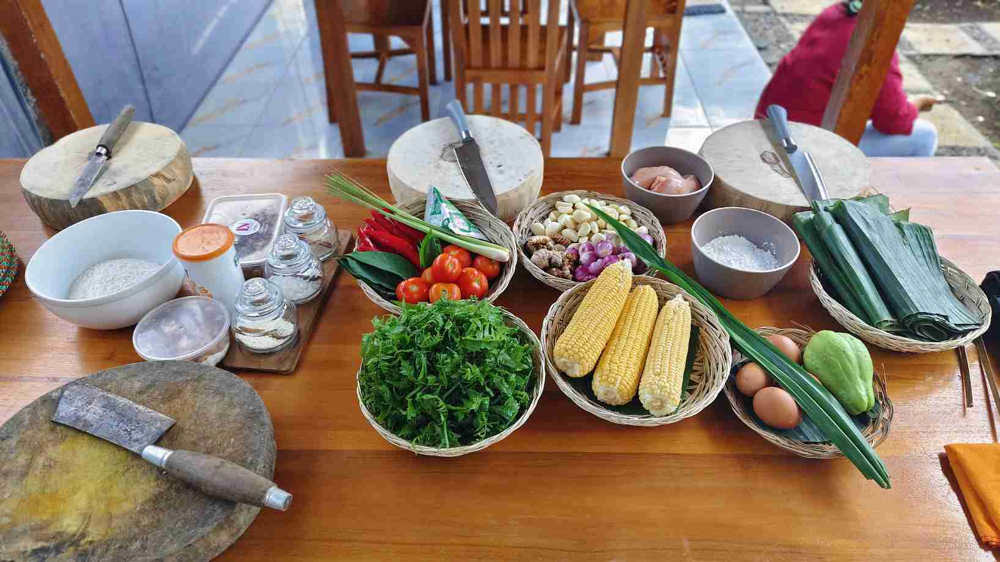
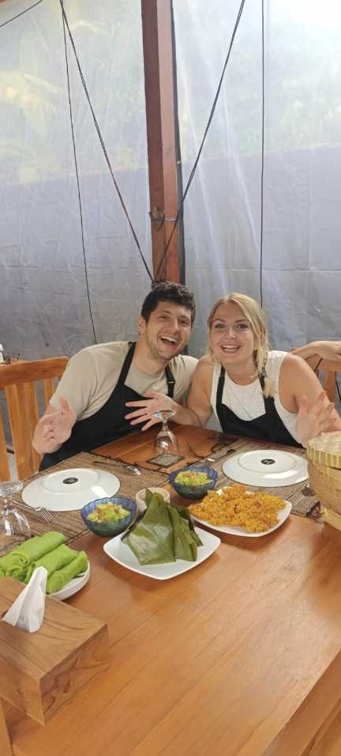

Balinese Cooking Class in Sidemen
Learn to cook authentic Balinese dishes with Juni and her family in a traditional village home. Discover local ingredients, traditional cooking techniques, and enjoy the delicious meal you've prepared together.
Why Join Our Balinese Cooking Class?
Local Family Home
Cook inside a real Balinese family compound instead of a commercial cooking studio.
Fresh Local Ingredients
Prepare traditional recipes using fresh herbs, spices, and vegetables commonly used in Balinese kitchens.
Hands-on Experience
Every guest actively participates in preparing and cooking each dish.
Authentic Hospitality
More than a cooking class—share stories, culture, and everyday village life with a local family.
What You'll Experience
1. Welcome Drink
Meet Juni and enjoy a refreshing welcome drink while learning about Balinese culture.
2. Prepare Ingredients
Learn about traditional herbs, spices, and vegetables before preparing your ingredients.
3. Cooking Session
Cook several authentic Balinese dishes step by step with personal guidance.
4. Enjoy Your Meal
Sit together and enjoy the delicious dishes you've prepared.
Meet Your Host
Your cooking class is hosted by Juni, a local Balinese woman from Sidemen who enjoys sharing traditional recipes passed down through generations. Together with her family, she welcomes guests into her home for a genuine cultural experience.
Fresh Ingredients from the Local Market
Every cooking class begins with fresh ingredients carefully selected from the local market in Sidemen. We use seasonal vegetables, aromatic herbs, traditional Balinese spices, and quality local produce to create authentic homemade dishes.
Because we cook with fresh seasonal ingredients, the menu may vary slightly depending on availability. This ensures every guest enjoys the freshest flavors while learning recipes that Balinese families prepare in their daily lives.
What's Included
Welcome Drink
Enjoy a refreshing welcome drink as you meet Juni and her family before the cooking class begins.
Hands-on Cooking Class
Cook every dish yourself with step-by-step guidance from Juni in a traditional Balinese family home.
Fresh Local Ingredients
All fresh ingredients, herbs, spices, and cooking equipment are provided.
Personal Cooking Guidance
Learn traditional Balinese recipes, ingredients, and cooking techniques directly from Juni throughout the class.
Enjoy Your Homemade Meal
After cooking, relax and enjoy the delicious dishes you've prepared together.
Drinking Water
Complimentary drinking water is available throughout the experience.
Experience Details
| Duration | Approximately 3 Hours |
| Location | Juni's Local House, Sidemen Village, East Bali |
| Start Time | Morning or Afternoon (by reservation) |
| Difficulty | Easy – Suitable for Beginners |
| Languages | English & Bahasa Indonesia |
| Private Class | Available upon request |
| Vegetarian Option | Available with advance notice |
| Price | IDR 450,000 per person |
More Than Just a Cooking Class
Our cooking class is more than simply following recipes—it's an opportunity to experience everyday life in a traditional Balinese family home. From the moment you arrive, you'll be welcomed like a friend and introduced to the warmth of Balinese hospitality.
As you cook alongside Juni, you'll learn about the fresh ingredients, traditional spices, and simple cooking techniques that Balinese families use in their daily meals. Along the way, Juni shares stories about local traditions, village life, and the cultural meaning behind each dish, making the experience both educational and personal.
Whether you're passionate about cooking or simply curious about Balinese culture, this hands-on experience offers a genuine connection with local people and creates memories that last long after your holiday in Bali.
Who Is This Cooking Class Perfect For?
Couples
Share a fun and memorable cooking experience together while discovering authentic Balinese cuisine.
Families
Children and adults can enjoy preparing simple traditional dishes together in a relaxed atmosphere.
Solo Travelers
Meet friendly local people and enjoy a welcoming cultural experience in Sidemen.
Culture Lovers
Perfect for travelers who want to experience authentic Balinese traditions beyond the usual tourist attractions.
Moments from Our Balinese Cooking Class
Take a look at some of the wonderful moments shared by our guests while learning traditional Balinese cooking at Juni's Local House in Sidemen.






What Guests Say About Our Authentic Balinese Cooking Class
Loved by travelers looking for a hands-on Balinese cooking experience in Sidemen.
5.0 out of 5 based on 14+ reviews
"One of the best cooking classes we've ever joined!" 🍛
Kadek and Juni welcomed us into their family home and made us feel like old friends.
We learned about fresh Balinese herbs, traditional spices, and how to prepare several authentic dishes from scratch.
Every step was explained with patience, and we loved hearing the stories behind each recipe.
Sharing the meal together afterward made the experience even more special.
Highly recommended for anyone visiting Sidemen!
"An unforgettable experience! We learned to cook authentic Balinese dishes using fresh local ingredients, and everything tasted amazing. The hospitality was exceptional."
"More than just a cooking class—it was a wonderful cultural experience. We discovered Balinese traditions, cooked delicious food, and enjoyed a fantastic meal with a lovely local family."
Frequently Asked Questions
Do I need cooking experience?
No. This cooking class is suitable for complete beginners as well as experienced home cooks.
How long does the experience last?
The cooking class lasts approximately 3 hours.
Can children join?
Yes. Families with children are welcome to join the experience.
Do you offer vegetarian options?
Yes. Please let us know in advance if you would like a vegetarian menu.
Where is the cooking class located?
The experience takes place at Juni's Local House in Sidemen Village, East Bali.
Is transportation included?
Transportation is not included, but we can arrange transport for an additional charge from many areas in Bali.
What should I wear?
Wear comfortable clothing and footwear suitable for cooking.
How can I book?
You can contact us via WhatsApp or use the booking form on our website.
Ready to Cook Like a Local?
Join Juni and her family for an authentic Balinese Cooking Class in Sidemen. Learn traditional recipes, enjoy genuine Balinese hospitality, and create unforgettable memories during your stay in Bali.
Book via WhatsApp